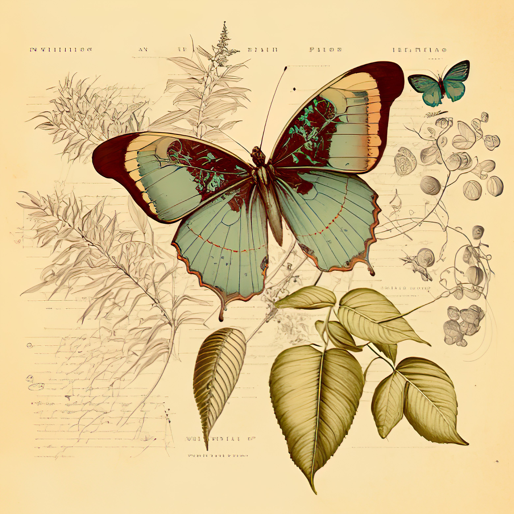
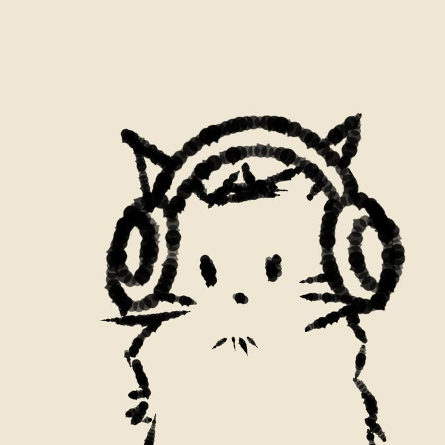

¿Quién soy?
Soy estudiante de Informática con interés en el desarrollo Front-end, Back-end y la optimización de código. Me gusta entender cómo funcionan las cosas por dentro. Me adapto bien a los equipos de trabajo y valoro mucho la colaboración.
Me inclino más hacia la lógica y el código que hacia el diseño, pero me gusta que las cosas también se vean bien. Aún estoy aprendiendo y disfruto trabajar en equipo.
Soy estudiante de Informática con interés en el desarrollo Front-end, Back-end y la optimización de código. Me gusta entender cómo funcionan las cosas por dentro. Me adapto bien a los equipos de trabajo y valoro mucho la colaboración.



Aplicación móvil para organizar tareas y pensamientos. Colaboré en el desarrollo implementando funcionalidades en React Native y manejo de base de datos.
Sitio web personal desarrollado como proyecto académico, enfocado en la práctica de HTML, CSS y JavaScript.

Aplicación web que simula la experiencia de Spotify Wrapped mostrando estadísticas personalizadas.
Programa en Ruby que implementa el algoritmo de la criba de Eratóstenes para encontrar números primos.
Repositorio educativo que funciona como un curso de Git y GitHub. Cada rama representa un tema distinto (introducción, manejo de ramas, merge, entre otros), permitiendo aprender de forma estructurada y práctica.
Si quieres contactarme, puedes hacerlo por cualquiera de estos medios.
 Gmail
Gmail
 LinkedIn
LinkedIn